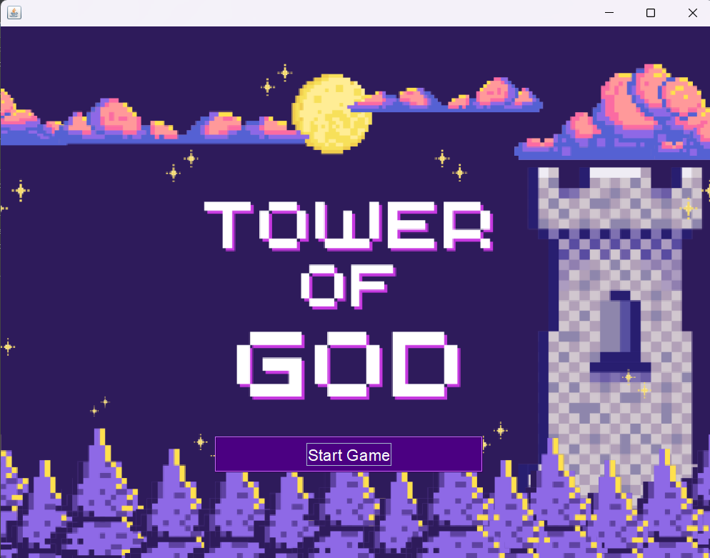
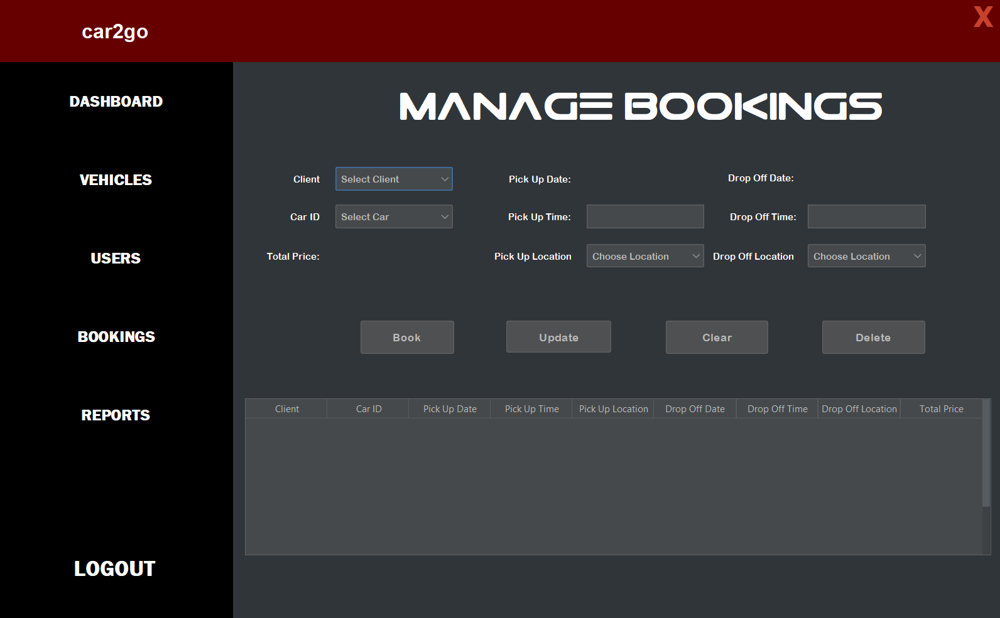
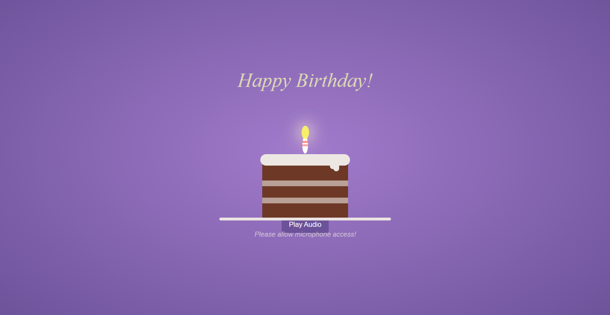
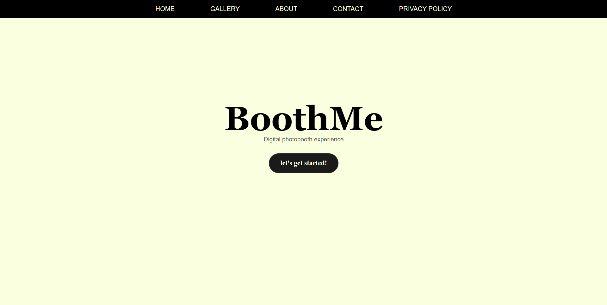
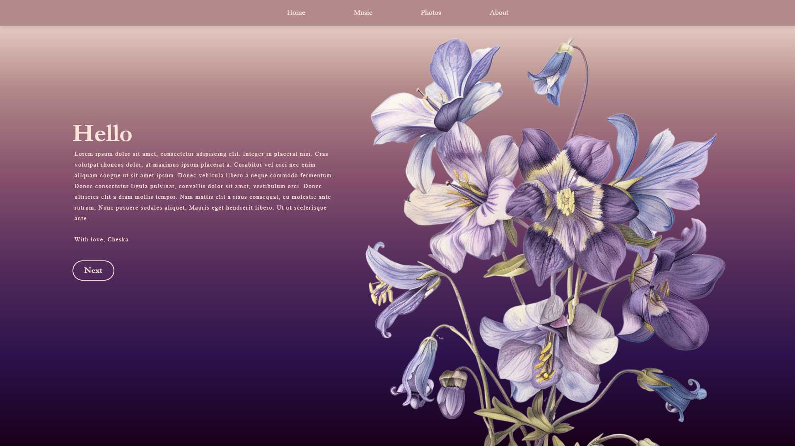

God of Tower
Tower of God Swing Game is a Java/Swing-based collaborative RPG where players ascend a mystical tower by solving data structure puzzles,
inspired by the Tower of God anime. Contributed to core gameplay systems, including catalyst-matching using HashMaps
and labyrinth navigation using graphs.
Tech Stack:
Frontend: Java Swing (custom UI components, animated text, responsive layouts)
Backend: OOP architecture (Factory pattern for floors, Observer pattern for player state)
Data Structures: HashMap, Graph, Stack, Queue, LinkedList
Tools: Maven (build automation), Git (version control with feature branching)

Car Rental System
Car Rental System is a Java-based desktop application designed to manage vehicle rentals through a simple and intuitive user interface.
Built using Java Swing and JSON for data storage, the system includes core features such as vehicle listing, rental processing,
and user management, structured with clean object-oriented design.
Tech Stack:
Frontend/UI: Java Swing (interactive forms, table views, custom dialogs)
Data Storage: JSON (read/write rental data, vehicle info, and user records)
Tools: NetBeans IDE, Git (version control)

Interactive Candle Birthday Cake
Interactive Candle Birthday Cake is a browser-based celebratory project that allows users to blow out virtual candles using their
microphone input. Developed with HTML, CSS, and JavaScript in VS Code, the website features custom animations, a birthday song that
plays automatically on load, and a festive confetti effect triggered when the candle is successfully blown out. Voice detection is
implemented to create a fun and immersive user experience.
Tech Stack:
Frontend: HTML, CSS (custom cake and confetti animations)
Logic & Interactivity: JavaScript (microphone input detection, DOM manipulation, event handling)
Media Integration: Web Audio API (for microphone and birthday song playback)
Tools: Visual Studio Code, GitHub (version control and deployment)

Digital Photobooth (ongoing)
Digital Photobooth is a browser‑based photo booth that turns any device with a webcam into an instant snapshot station.
Built with HTML, CSS, and JavaScript in VS Code and deployed via GitHub Pages, it uses the WebRTC getUserMedia API to
capture live images, applies real‑time filters and custom event frames, and lets guests download or share their photos
on the spot. A countdown overlay, playful sound cues, and a post‑capture gallery complete the immersive experience.
Tech Stack:
Core: HTML (semantic layout) | CSS (responsive styling, animated countdown & frame overlays) | JavaScript (WebRTC capture, filter effects, dynamic gallery)
Media Handling: Canvas API (image compositing), Web Audio API (shutter sound, countdown beeps)
Deployment & Tools: Visual Studio Code, GitHub (source control & static hosting)

1st Website
1st Website is a personal and creative web project—my very first website—designed.
Built with basic HTML, CSS, and JavaScript, it features a clean layout, form submission (non-database), and a heart-themed aesthetic.
This project marked the beginning of my journey into web development, where I learned how to structure content, style pages,
and handle simple user interactions.
Tech Stack:
Frontend: HTML (page structure), CSS (styling and layout), JavaScript (basic interaction and validation)
Tools: Visual Studio Code, GitHub (version control and publishing)